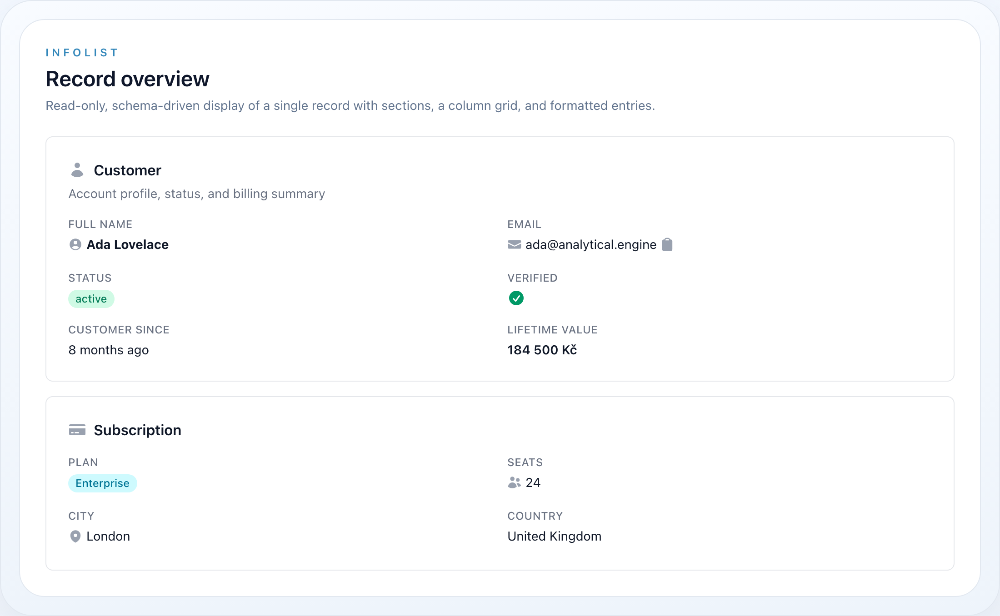
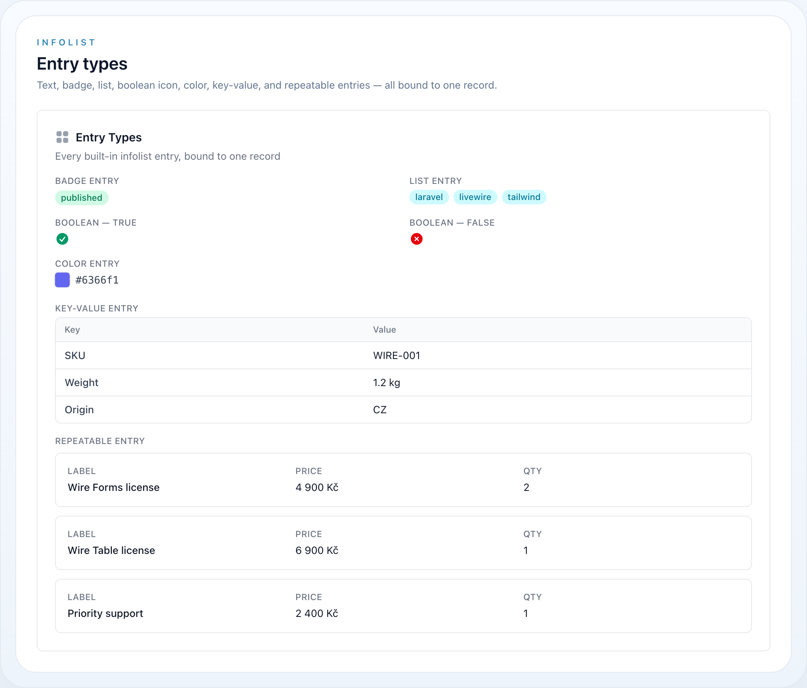

Core
Infolisty
Infolisty jsou read-only protějšek formuláře: deklarativní, fluent schéma, které zobrazuje jeden záznam místo jeho editace. Žijí ve wire-core vedle widgetů a znovupoužívají stejný schema layout (Section, Grid, Fieldset) a Foundation concerny (label, ikona, barva, velikost, viditelnost, column span) jako formuláře a sloupce tabulek — takže jeden slovník pokrývá celý ekosystém.


Každá vestavěná entry — text, badge, list, boolean ikona, barva, key-value a repeatable — navázaná na jeden záznam.
Na této stránce
- Instalace
- Rychlý start
- Typy entries přehledně
- Obsah
- Objekt Infolist
- Skládání schématu
- Resolvování stavu
- Layout
- Flex
- TextEntry
- TextEntry API
- BadgeEntry
- IconEntry
- IconEntry API
- BooleanEntry
- ListEntry
- ListEntry API
- ImageEntry
- ImageEntry API
- ColorEntry
- KeyValueEntry
- RepeatableEntry
- Předcházení N+1 na řádcích relace
- Akce
- Uvnitř action modalu
- Infolist API
Infolisty jsou read-only protějšek formuláře: deklarativní, fluent schéma, které zobrazuje jeden záznam místo jeho editace. Žijí ve wire-core vedle widgetů a znovupoužívají stejný schema layout (Section, Grid, Fieldset) a Foundation concerny (label, ikona, barva, velikost, viditelnost, column span) jako formuláře a sloupce tabulek — takže jeden slovník pokrývá celý ekosystém.
use NyonCode\WireCore\Infolists\Infolist;use NyonCode\WireCore\Infolists\Components\TextEntry;use NyonCode\WireCore\Infolists\Components\IconEntry;use NyonCode\WireCore\Foundation\Schema\Section;use NyonCode\WireCore\Foundation\Colors\Color; Infolist::make() ->record($user) ->schema([ Section::make('Profile')->icon('user')->columns(2)->schema([ TextEntry::make('name')->weight('bold'), TextEntry::make('email')->icon('envelope')->copyable(), TextEntry::make('created_at')->dateTime()->since(), TextEntry::make('status') ->badge() ->color(fn ($state) => $state === 'active' ? Color::Success : Color::Gray), IconEntry::make('is_verified')->boolean(), ]), ]);Nováček? Infolist je jen seznam věcí, které chcete o jednom záznamu ukázat. Postavíte ho v PHP, předáte mu záznam a vyechujete v Blade. Zbytek této stránky staví od nejjednoduššího možného příkladu.
Instalace
Infolisty se dodávají s wire-core — nic navíc k instalaci. Ujistěte se, že pohledy balíčku jsou ve vašich Tailwind content cestách, aby se styly vygenerovaly:
export default { content: [ // ...vaše cesty aplikace './vendor/nyoncode/wire-core/resources/views/**/*.blade.php', ],}Rychlý start
Infolist žije na Livewire komponentě. Nejjednodušší způsob je computed property, který vrací Infolist, jenž pak vyechujete v pohledu komponenty.
use Livewire\Attributes\Computed;use Livewire\Component;use NyonCode\WireCore\Infolists\Infolist;use NyonCode\WireCore\Infolists\Components\TextEntry;use NyonCode\WireCore\Foundation\Schema\Section; class ShowUser extends Component{ public User $user; // záznam, který chcete zobrazit #[Computed] public function infolist(): Infolist { return Infolist::make() ->record($this->user) // 1. dát mu záznam ->schema([ // 2. vypsat, co ukázat Section::make('Profile') ->columns(2) ->schema([ TextEntry::make('name'), // čte $user->name TextEntry::make('email')->copyable(), ]), ]); } public function render() { return view('livewire.show-user'); }}{{-- resources/views/livewire/show-user.blade.php --}}<div> {{ $this->infolist }} {{-- 3. vykreslit --}}</div>To je celá smyčka: záznam dovnitř → schéma → vyechovat ven. {{ $this->infolist }} funguje, protože Infolist je Htmlable a $this->infolist resolvuje computed property — žádný speciální helper ani trait.
Metodu můžete pojmenovat jakkoli (
$this->orderInfolist,$this->summary, …) a mít jich na jedné komponentě několik — viz Skládání schématu.
Typy entries přehledně
| Entry | Třída | Použití pro |
|---|---|---|
| Text | TextEntry |
Text, čísla, měna, data — plus badge, kopírování, list a zkrácení |
| Badge | BadgeEntry |
TextEntry přednastavený jako barevná pilulka |
| Icon | IconEntry |
Booleany a stav → mapy ikon |
| Boolean | BooleanEntry |
IconEntry přednastavený na boolean check/x |
| List | ListEntry |
Kolekce jako odrážkový seznam nebo badge chipy |
| Image | ImageEntry |
Avatary a náhledy (jeden nebo galerie) |
| Color | ColorEntry |
Barevný vzorek + jeho hodnota |
| Key-value | KeyValueEntry |
Array / JSON atribut jako tabulka klíč/hodnota |
| Repeatable | RepeatableEntry |
Vnořené schéma entries opakované per položka relace/pole |
Enum casty. Entries čtou enum-cast atributy bezpečně:
TextEntryvykreslí label enumu (přes kontraktEnum\HasLabel, jinak backing hodnota / název case) aIconEntryauto-resolvuje svou ikonu a barvu z enumu implementujícíhoEnum\HasColor/Enum\HasIcon. Viz Foundation → Enumy.
Obsah
- Objekt Infolist
- Skládání schématu
- Resolvování stavu
- Layout
- TextEntry
- BadgeEntry
- IconEntry
- BooleanEntry
- ListEntry
- ImageEntry
- ColorEntry
- KeyValueEntry
- RepeatableEntry
- Akce
- Uvnitř action modalu
- Infolist API
Objekt Infolist
Infolist::make() postaví kontejner; record() naváže zdroj dat (Eloquent model nebo prosté pole), schema() drží entries a layout a columns() nastaví top-level grid.
Infolist::make() ->record($order) // Model|array ->columns(2) // top-level sloupce gridu (výchozí 1) ->schema([ /* … */ ]);state(array $data) je alias pro record(), když je zdroj prosté pole:
Infolist::make()->state(['name' => 'Ada', 'email' => 'ada@example.com'])->schema([ TextEntry::make('name'), TextEntry::make('email'),]);Záznam se automaticky propaguje do každé entry, když se infolist vykreslí, rekurzivně skrz layoutové komponenty.
Skládání schématu
Můžu přidat víc než pár polí? Ano —
schema()je jen seznam. Dejte tam kolik entries chcete, seskupte je kolika sekcemi chcete a míchejte libovolné typy entries dohromady. Není žádný limit a žádné speciální zapojení; jen uspořádáváte objekty v poli.
Přidejte kolik entries potřebujete. Každý řádek make('column') ukáže jednu hodnotu:
Section::make('Profile')->columns(2)->schema([ TextEntry::make('name'), TextEntry::make('email'), TextEntry::make('phone'), TextEntry::make('created_at')->date(), IconEntry::make('is_verified')->boolean(), // ...přidejte další, v libovolném pořadí]);Použijte několik sekcí k rozdělení záznamu do logických skupin — každá je samostatná karta:
Infolist::make()->record($order)->schema([ Section::make('Customer')->columns(2)->schema([ TextEntry::make('customer.name'), TextEntry::make('customer.email'), ]), Section::make('Payment')->columns(2)->schema([ TextEntry::make('total')->money(), TextEntry::make('status')->badge(), ]), Section::make('Notes')->schema([ TextEntry::make('notes')->prose(), ]),]);Vnořte layouty — Grid nebo Fieldset může žít uvnitř Section a RepeatableEntry nese své vlastní sub-schéma:
Section::make('Order')->schema([ Grid::make()->columns(3)->schema([ TextEntry::make('number'), TextEntry::make('placed_at')->date(), TextEntry::make('total')->money(), ]), RepeatableEntry::make('items')->columns(3)->schema([ TextEntry::make('label'), TextEntry::make('qty')->numeric(), TextEntry::make('price')->money(), ]),]);Sekci ani nepotřebujete — entries mohou sedět přímo v infolistu, uspořádané top-level columns():
Infolist::make()->record($user)->columns(2)->schema([ TextEntry::make('name'), TextEntry::make('email'),]);Několik infolistů na jedné stránce — jen definujte více než jeden computed property a vyechujte každý, kam chcete:
#[Computed]public function profile(): Infolist { /* ... */ } #[Computed]public function billing(): Infolist { /* ... */ }<div class="space-y-6"> {{ $this->profile }} {{ $this->billing }}</div>Pravidlo palce: pokud dokážete popsat, co ukázat, jako „tato hodnota, pak ta hodnota, seskupené pod těmito nadpisy", můžete to vyjádřit zde — jedna entry na hodnotu, jedna sekce na skupinu.
Resolvování stavu
Ve výchozím stavu entry čte svou hodnotu ze záznamu podle názvu, s tečkovou notací pro relace a vnořená pole (resolvováno přes data_get):
TextEntry::make('name'); // $record->nameTextEntry::make('company.name'); // $record->company->nameTextEntry::make('address.city'); // $record['address']['city']Přepište resolvování pomocí state() (dostane záznam), transformujte resolvovanou hodnotu pomocí formatStateUsing() (dostane $state, $record) a poskytněte fallback pomocí default():
TextEntry::make('full_name') ->state(fn ($record) => $record->first_name.' '.$record->last_name); TextEntry::make('status') ->formatStateUsing(fn ($state) => ucfirst($state)) ->default('—');color() a jakákoli jiná dynamická vlastnost také přijímají closuru resolvovanou s $state a $record:
TextEntry::make('priority') ->badge() ->color(fn ($state) => match ($state) { 'high' => Color::Danger, 'medium' => Color::Warning, default => Color::Gray, });Layout
Infolisty používají kanonický schema layout z NyonCode\WireCore\Foundation\Schema — stejné třídy, které form layouty subclassují:
use NyonCode\WireCore\Foundation\Schema\Section;use NyonCode\WireCore\Foundation\Schema\Grid;use NyonCode\WireCore\Foundation\Schema\Fieldset; Section::make('Billing') ->icon('credit-card') ->description('Plan and invoicing details') ->columns(2) ->collapsible() ->schema([ Grid::make()->columns(3)->schema([ /* entries */ ]), Fieldset::make('Tax')->schema([ /* entries */ ]), ]);Každá entry přijímá columnSpan(int) / columnSpanFull() pro rozpětí gridu.
Flex
Flex uspořádá své potomky vedle sebe na jedné vodorovné (flexbox) ose, na malých obrazovkách je skládá svisle — užitečné pro spárování detailní karty se souhrnem nebo avataru s biem. Potomci rostou a sdílejí řádek rovnoměrně; from() nastaví breakpoint (sm / md / lg, výchozí md), na kterém se řádek stane vodorovným.
use NyonCode\WireCore\Foundation\Schema\Flex; Flex::make()->from('lg')->schema([ Section::make('Details')->schema([ /* entries */ ]), Section::make('Summary')->schema([ /* entries */ ]),]);TextEntry
Výchozí entry. Sdílí kanonický concern FormatsState se sloupci tabulek, takže money(), numeric(), date(), dateTime() a since() formátují hodnotu přesně jako odpovídající TextColumn.
TextEntry::make('total')->money('Kč'); // 1 234 KčTextEntry::make('weight')->numeric(2); // 1 234,50TextEntry::make('created_at')->date(); // 20.06.2026TextEntry::make('updated_at')->dateTime()->since(); // 3 hours ago TextEntry::make('status')->badge()->color(Color::Success);TextEntry::make('email')->icon('envelope')->copyable();TextEntry::make('bio')->limit(120);TextEntry::make('name')->weight('bold'); // normal|medium|semibold|bold|lightTextEntry::make('notes')->prose(); // dlouhý text, prose stylováníTextEntry::make('tags')->bulleted(); // array → odrážkový seznamTextEntry::make('aliases')->listWithLineBreaks(); // array → seznam oddělený řádkyTextEntry API
| Metoda | Popis |
|---|---|
money(?string $currency = 'CZK') |
Formátovat jako měnu |
numeric(int $decimals = 0, ?string $decimalSeparator = ',', ?string $thousandsSeparator = ' ') |
Formátovat jako číslo |
date(?string $format = 'd.m.Y') / dateTime(?string $format = 'd.m.Y H:i') |
Formátovat datum / datetime |
since() |
Vykreslit datum jako lidský diff (diffForHumans) |
badge(bool = true) |
Vykreslit hodnotu jako barevnou pilulku |
color(string|Color|Closure) |
Barva badge / textu |
icon(string|Closure, ?string $position) |
Přední ikona |
copyable(bool = true) |
Přidat prvek copy-to-clipboard |
limit(?int) |
Zkrátit dlouhý text |
weight(?string) |
Tloušťka písma |
prose(bool = true) |
Prose stylování pro dlouhý text |
listWithLineBreaks(bool = true) / bulleted(bool = true) |
Vykreslit array stav jako seznam |
formatStateUsing(Closure) |
Transformovat resolvovanou hodnotu ($state, $record) |
BadgeEntry
Prvotřídní TextEntry přednastavený na vykreslení jako badge — ergonomická forma TextEntry::make(...)->badge(). Dědí plné TextEntry API (barva, ikona, formátování), takže badge chrome zůstane vlastněno na jednom místě.
use NyonCode\WireCore\Infolists\Components\BadgeEntry; BadgeEntry::make('status') ->color(fn ($state) => $state === 'active' ? Color::Success : Color::Gray) ->icon('check-circle');IconEntry
Vykreslí ikonu odvozenou ze stavu. Použijte boolean() pro true/false nebo icons() pro mapu hodnota → ikona.
IconEntry::make('is_verified')->boolean(); // ✓ success / ✕ danger IconEntry::make('is_active') ->boolean() ->trueIcon('check-badge')->trueColor('success') ->falseIcon('no-symbol')->falseColor('gray'); IconEntry::make('status') ->icons(['draft' => 'pencil', 'published' => 'check', 'archived' => 'archive-box']) ->colors(['draft' => 'gray', 'published' => 'success', 'archived' => 'warning']);IconEntry API
| Metoda | Popis |
|---|---|
boolean(bool = true) |
Mapovat truthy/falsy stav na check/x ikony |
trueIcon() / falseIcon() |
Přepsat boolean ikony |
trueColor() / falseColor() |
Přepsat boolean barvy |
icons(array|Closure) |
Mapovat hodnoty stavu na názvy ikon |
colors(array|Closure) |
Mapovat hodnoty stavu na názvy barev |
BooleanEntry
Prvotřídní IconEntry přednastavený na boolean režim — ergonomická forma IconEntry::make(...)->boolean(). Truthy stav vykreslí success check ikonu, falsy stav danger x ikonu; ikony a barvy zůstanou přepsatelné.
use NyonCode\WireCore\Infolists\Components\BooleanEntry; BooleanEntry::make('is_verified'); BooleanEntry::make('is_active') ->trueIcon('check-badge')->trueColor('success') ->falseIcon('no-symbol')->falseColor('gray');ListEntry
Vykreslí kolekční stav jako odrážkový seznam nebo řadu badge chipů — střední cesta mezi jednou TextEntry a plnou RepeatableEntry. Stav může být array/iterable nebo oddělovaný řetězec rozdělený separator(). Položky znovupoužívají TextEntry formátování (číslo/měna/datum, formatStateUsing(), limit()).
use NyonCode\WireCore\Infolists\Components\ListEntry; ListEntry::make('tags'); // odrážkový seznam ListEntry::make('tags')->badge()->color('primary'); // badge chipy ListEntry::make('roles')->separator(','); // "admin, editor" → dvě položky ListEntry::make('categories')->badge()->limitList(3); // první 3 chipy + pilulka "+N"ListEntry API
| Metoda | Popis |
|---|---|
badge(bool = true) |
Vykreslit položky jako badge chipy místo odrážkového seznamu |
bulleted(bool = true) |
Přepnout odrážky seznamu (non-badge režim) |
separator(?string) |
Rozdělit skalární řetězcový stav na položky |
limitList(?int) |
Omezit viditelné položky; zbytek se sbalí do +N indikátoru |
color(string|Color|Closure) |
Barva chipu / textu |
icon(string|Closure) |
Přední ikona na každém chipu |
ImageEntry
Vykreslí stav jako jeden nebo více obrázků. Absolutní/data URL se použijí doslovně; relativní cesty resolvují přes nakonfigurovaný disk().
ImageEntry::make('avatar')->circular()->imageSize(56); ImageEntry::make('logo')->disk('public')->defaultImageUrl('/img/placeholder.png'); ImageEntry::make('gallery')->stacked()->imageSize(40); // array stav → překrytá galerieImageEntry API
| Metoda | Popis |
|---|---|
disk(?string) |
Storage disk pro relativní cesty |
imageSize(int) |
Šířka/výška v pixelech |
circular(bool = true) |
Zakulatit obrázek |
stacked(bool = true) |
Překrýt více obrázků |
defaultImageUrl(?string) |
Fallback, když je stav prázdný |
ColorEntry
Vykreslí vzorek plus hodnotu barvy, volitelně kopírovatelnou.
ColorEntry::make('brand_color')->copyable();KeyValueEntry
Vykreslí array (nebo JSON-cast atribut) jako tabulku klíč/hodnota.
KeyValueEntry::make('meta') ->keyLabel('Attribute') ->valueLabel('Value');RepeatableEntry
Vykreslí vnořené schéma entries jednou per položka iterable stavu — hasMany relace nebo pole řádků.
RepeatableEntry::make('items') ->columns(3) ->schema([ TextEntry::make('label')->weight('medium'), TextEntry::make('price')->money('Kč'), TextEntry::make('qty')->numeric(), ]);| Metoda | Popis |
|---|---|
schema(array) |
Schéma entries vykreslené per položka |
columns(int) |
Sloupce gridu per řádek |
contained(bool = true) |
Obalit každý řádek do ohraničené karty |
actions(array) |
Akční tlačítka per řádek (viz Akce) |
with(array|string) |
Eager-load relací na řádcích (viz níže) |
Předcházení N+1 na řádcích relace
Když jsou řádky Eloquent modely, jejichž dětské entries čtou vnořenou cestu relace (např. product.name na každém řádku objednávky), čtení té cesty lazy načte relaci jednou per řádek — N+1. Deklarujte relace pomocí with() a eager-loadnou se přes všechny řádky v jednom dotazu před renderem:
RepeatableEntry::make('lines') ->with(['product', 'tax']) // jeden dotaz per relace, ne per řádek ->schema([ TextEntry::make('product.name'), TextEntry::make('tax.rate')->numeric(2), ]);with() je no-op pro array řádky a slučuje se napříč opakovanými voláními. (Relace, která pohání samotné repeatable — lines — by měla být eager-loadovaná na rodičovském dotazu jako obvykle.)
Akce
Entries, hlavičky sekcí a repeatable řádky mohou nést interaktivní Action tlačítka — postavená ze stejného fluent Action API jako table a modal akce a sdílející field-action dispatch kontrakt (HasFieldActions). Názvy akcí musí být unikátní v rámci infolistu.
Požadavek na hostitele. Akce infolistu dispatchují přes hostitelův
callInfolistAction(), poskytovaný core action runtime (InteractsWithActions). Fungují hned, když je infolist zobrazen uvnitř action modalu (table /WithActionshostitel ho skládá). Samostatný infolist vyechovaný v prosté Livewire komponentě dispatchuje jen když ta komponenta skládá action runtime.
Hlavičkové akce sekce — vykreslené v hlavičce sekce, dostanou navázaný záznam:
Section::make('Profile') ->headerActions([ Action::make('edit')->icon('pencil')->action(fn ($record) => /* … */), ]) ->schema([ /* entries */ ]);Akce entry — vykreslené pod hodnotou, dostanou záznam a $state entry:
TextEntry::make('api_token') ->actions([ Action::make('regenerate')->icon('arrow-path') ->action(fn ($record) => $record->regenerateToken()), ]);Akce per řádek — deklarované na RepeatableEntry, vykreslené jednou per řádek a vyvolané s položkou toho řádku jako $record / $state:
RepeatableEntry::make('lines') ->schema([TextEntry::make('sku'), TextEntry::make('qty')->numeric()]) ->actions([ Action::make('viewLine')->icon('eye') ->action(fn ($record) => /* $record je položka řádku */), ]);Uvnitř action modalu
ViewAction (nebo jakákoli akce) může otevřít read-only modal, který ukáže záznam v infolistu. infolist() zrcadlí form(): záznam akce se naváže automaticky, modal není potvrzení a vykreslí jen tlačítko zavření.
use NyonCode\WireCore\Actions\ViewAction; ViewAction::make() ->slideOver() ->infolist([ TextEntry::make('name')->weight('bold'), TextEntry::make('email')->copyable(), TextEntry::make('created_at')->dateTime()->since(), ]); // Closure forma dostane záznam:ViewAction::make()->infolist(fn ($record) => Infolist::make()->schema([ TextEntry::make('name'),]));Infolist API
| Metoda | Popis |
|---|---|
make() |
Vytvořit infolist |
record(Model|array) |
Navázat zdroj dat |
state(array) |
Navázat prosté pole (alias record()) |
schema(array) |
Entries a layoutové komponenty |
columns(int) |
Top-level sloupce gridu (výchozí 1) |
getRecord() / getSchema() / getColumns() |
Accessory |
toHtml() |
Vykreslit (také přes Htmlable echo) |